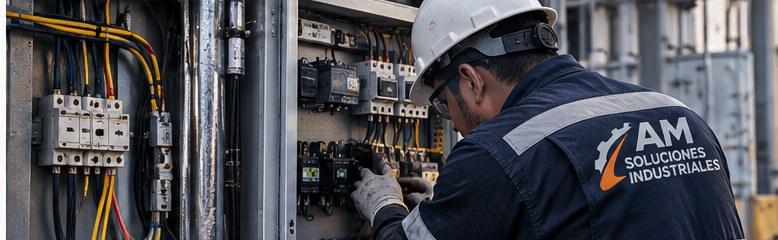
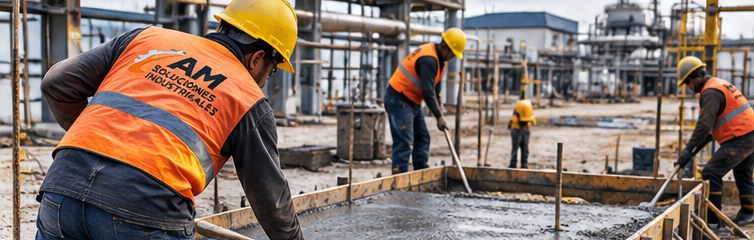
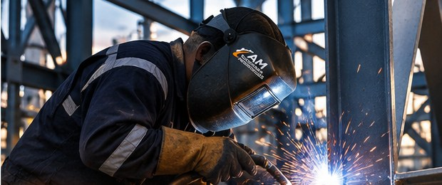
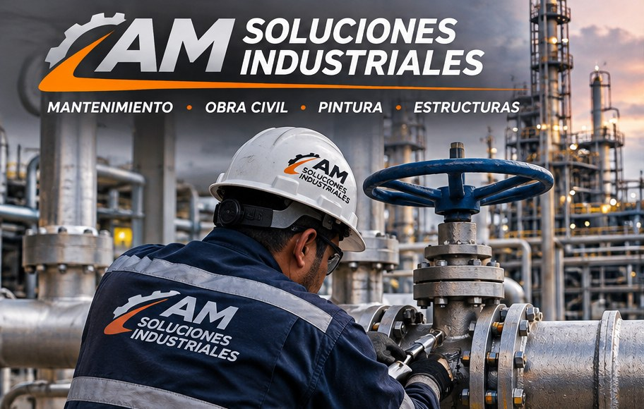
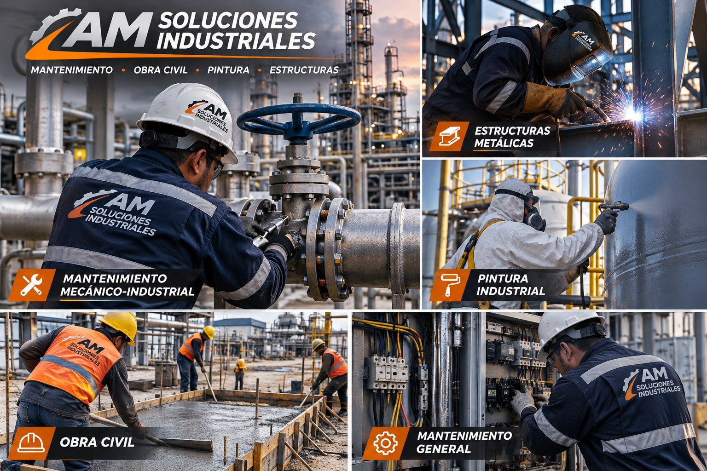

01 · ACABADOS
Pintura y acabados
Pintura interior y exterior, fachadas, resanes, preparación de superficies e impermeabilización.
Atendemos las necesidades de mantenimiento de empresas, comercios, tiendas de autoservicio, oficinas, casas y departamentos. Integramos diferentes especialidades para resolver desde una reparación puntual hasta proyectos y programas de mantenimiento.
En AM Soluciones Industriales ayudamos a conservar, reparar y mejorar espacios e instalaciones. Atendemos a empresas, comercios y clientes residenciales con soluciones ajustadas a cada necesidad.
Escuchamos, revisamos el alcance y presentamos una propuesta clara. Nos importa hacer bien el trabajo, cuidar los detalles y mantener una comunicación cercana, porque la confianza se construye cumpliendo.

Coordinamos distintas especialidades para atender instalaciones comerciales, corporativas, residenciales e industriales.
Pintura interior y exterior, fachadas, resanes, preparación de superficies e impermeabilización.

Albañilería, pisos, firmes, banquetas, rampas, reparaciones y adecuaciones de espacios.

Perfilería, soldadura, fabricación, reparación, soportes y estructuras metálicas.
Mantenimiento de minisplits, instalación y reparación de equipos y cortinas de aire.

Instalaciones y reparaciones eléctricas, iluminación, circuitos, tableros y mantenimiento preventivo.
Reparación de fugas, tuberías, conexiones, drenajes y mantenimiento de instalaciones de agua.

Conservación, reparaciones, atención de reportes y mantenimiento de componentes y equipos.
Tuberías, válvulas, conexiones, trabajos mecánicos y apoyo a instalaciones industriales.
Atendemos necesidades de mantenimiento residencial, desde reparaciones y pintura hasta adecuaciones e instalaciones. Podemos revisar trabajos específicos o ayudarte a organizar varias mejoras en una sola visita.
Adaptamos el servicio al tamaño, uso y necesidades de cada propiedad.
Podemos atender un requerimiento específico o convertirnos en tu aliado de mantenimiento a largo plazo.
Programas mensuales o periódicos para conservar instalaciones, atender rutinas y dar seguimiento a varias ubicaciones.
Atención de reportes, fallas y reparaciones conforme a diagnóstico, alcance, disponibilidad y cotización.
Trabajos por evento, remodelaciones, adecuaciones e instalaciones con alcance y propuesta definidos.
Atención en Tampico, Ciudad Madero, Altamira y alrededores. Para proyectos fuera de esta zona, consúltanos disponibilidad.
Consultar coberturaEnvíanos el tipo de servicio, ubicación y, si es posible, fotografías del trabajo. Así podremos orientarte mejor para preparar una cotización.
Escríbenos por WhatsApp para solicitar información, programar una revisión o compartir los detalles de tu proyecto.
Solicitar cotización por WhatsAppIng. Alan Maldonado · Gerencia
Correo: am.soluciones@outlook.com
Cobertura: Tampico y zona sur de Tamaulipas